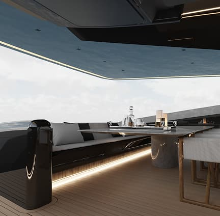

Swimming and water sports: try your hand at water skiing
Fishing: try to catch your own dinner
Sightseeing tours: take a shore or island tour, enjoy the views and sunsets from the water
Rest and relaxation: read a book or listen to music while enjoying the outdoor atmosphere.
